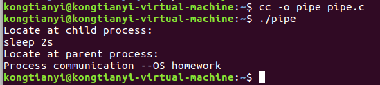

背景
操作系统课程习作。
环境
Ubuntu16.04 LTS
gcc version 5.4.0
关于进程通信
通信方式
Linux下进程间通信方式有以下几种:
- 无名管道(pipe)和有名管道(FIFO)
- 消息队列
- 共享内存
- 信号量
- 信号(signal)
- 套接字(socket)
通信用途
进程通信的用途有以下几类:
- 数据传输：一个进程需要将它的数据发送给另一个进程。
- 共享数据：多个进程想要操作共享数据，一个进程对共享数据的修改，别的进程应该立刻看到。
- 通知事件：一个进程需要向另一个或一组进程发送消息，通知它（它们）发生了某种事件（如进程终止时要通知父进程）。
- 资源共享的同步：多个进程之间共享同样的资源。为了做到这一点，需要内核提供锁和同步机制。
- 进程控制：有些进程希望完全控制另一个进程的执行（如Debug进程），此时控制进程希望能够拦截另一个进程的所有陷入和异常，并能够及时知道它的改变状态。
从前没有进程间通信的概念，用了一下午加一晚上的时间才弄懂了无名管道方式，在此记录下来，相关知识点在下方代码中做了详细的注释。
实现代码
1 | #include<unistd.h> // 引入fork()/write()/read() |
注意点
- 要先创立管道，再复制进程，即先执行
pipe()，再执行fork()。次序颠倒则会在父子进程中创建出互无关联的两个管道。 fork()函数所创建的两个进程分占两个内存区，上例中出管道外的变量在父子进程中是互无关联。所以可以将子进程中的字符串读入buf，再将管道中的数据读到父进程的buf中输出。在此之前，父进程的buf是空的。- 如上一条所述，父子进程的变量互无关联，但是父子进程的管道为什么还是通用的呢？原因是子进程复制的
fd[0]和fd[1]是操纵管道的句柄。在终端输入命令man fork，可以看到与本例类似的示例程序，在示例程序的上方，解释了这个问题。
运行结果
